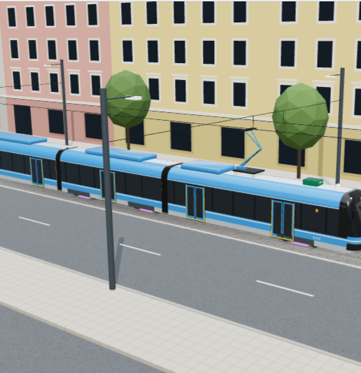
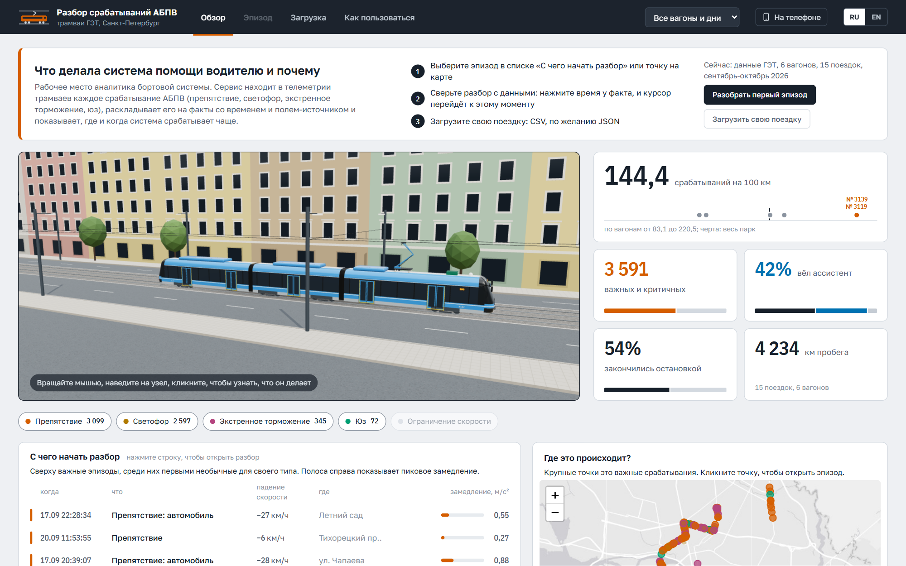
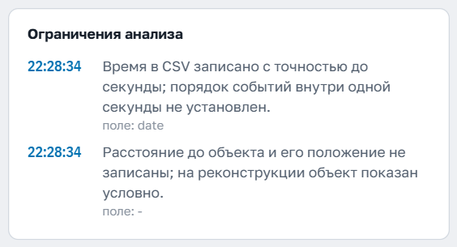
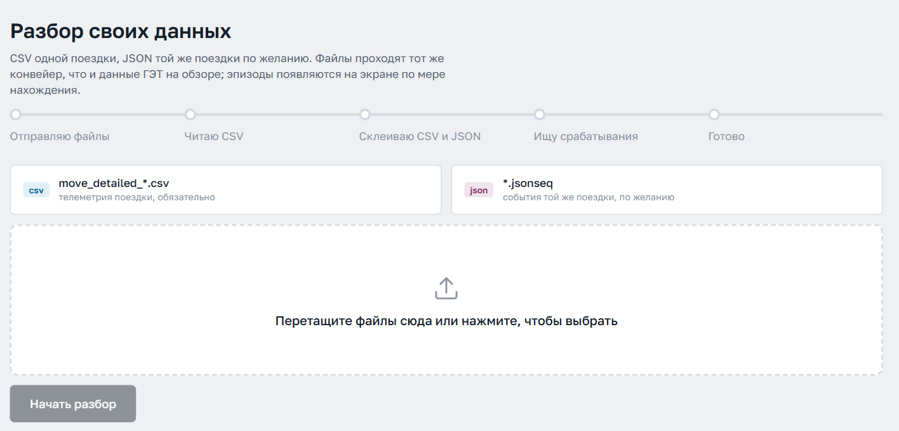
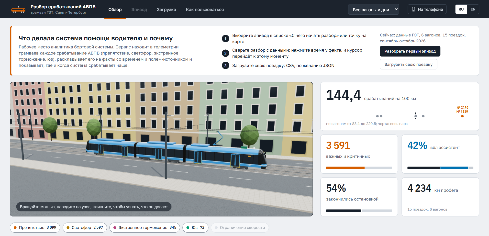
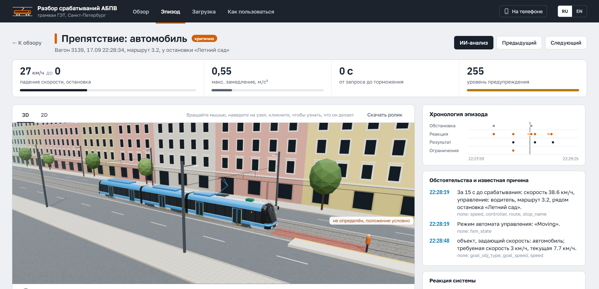
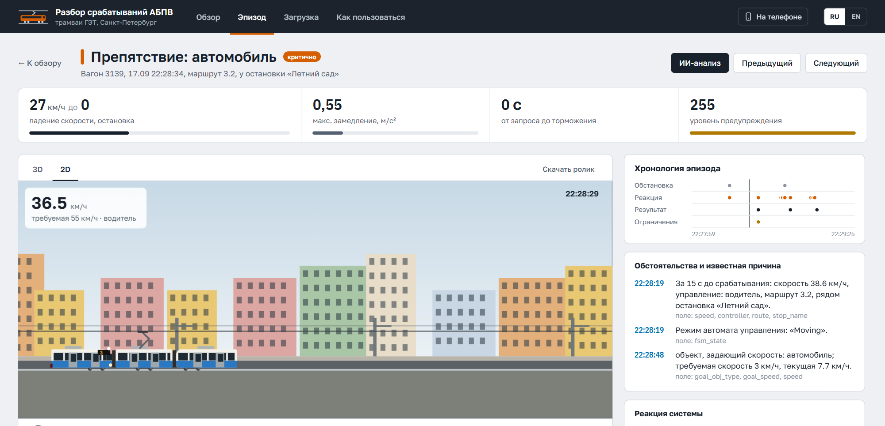
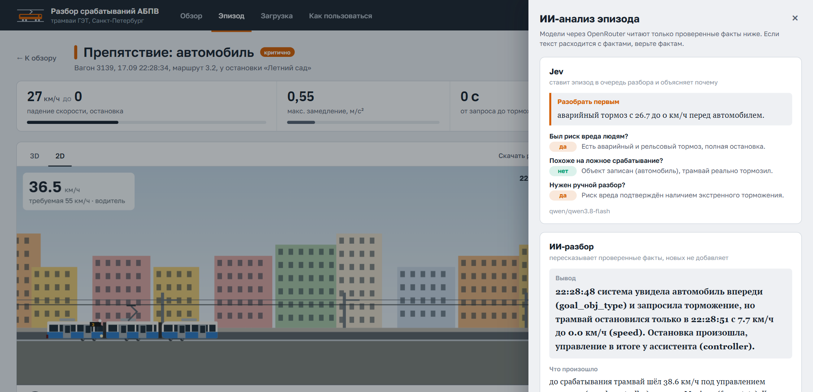
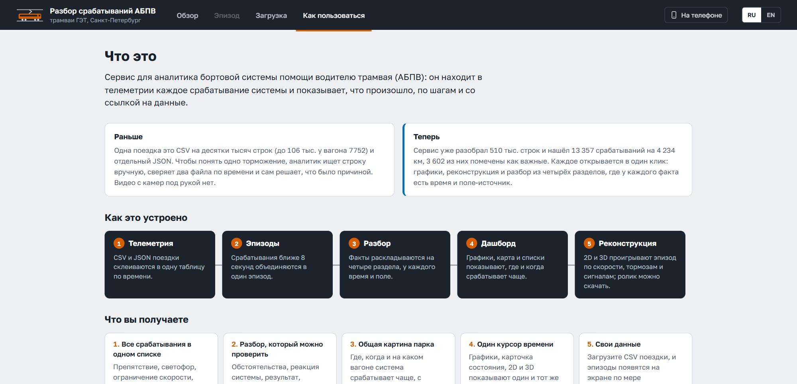

НТУ «Сириус» | Хакатон ГЭТ: ИИ-разбор эпизодов АБПВ
1 / 8
Хакатон | Задача ГЭТ
Каждое срабатывание АБПВ разобрано по фактам: у каждого факта есть время и поле данных
Рабочее место аналитика бортовой системы
для СПб ГУП «Горэлектротранс»

3D-реконструкция по записи, вагон 3139, 17.09
НТУ «Сириус» | Хакатон ГЭТ: ИИ-разбор эпизодов АБПВ
2 / 8
Одна поездка это до 106 тыс. строк и два файла: каждое торможение аналитик разбирает вручную
106 тыс.
строк CSV в одной поездке вагона 7752
2 файла
CSV и JSON сверяют по времени вручную
0
быстрого доступа к видео с камер
Нужно: найти срабатывание и проверить по данным, что произошло
НТУ «Сириус» | Хакатон ГЭТ: ИИ-разбор эпизодов АБПВ
3 / 8
Срабатывания записаны в CSV, а не в JSON: мы склеили два файла по времени в одну таблицу
CSV
срабатывания, тормоза, рукоятки
JSON
тип объекта, режим, предупреждение
Таблица поездки
70+ полей,
шаг по времени CSV
Находка: в JSON поля m_*_act почти всегда «No», поэтому срабатывания берём из CSV
510 тыс.
точек телеметрии
15
поездок, 6 вагонов
4 234
км пробега
0,998
корреляция скорости CSV и JSON
НТУ «Сириус» | Хакатон ГЭТ: ИИ-разбор эпизодов АБПВ
4 / 8
Все 5 этапов ТЗ работают на данных ГЭТ: найдено 13 357 эпизодов, 3 602 из них важные
1
Подготовка данных
CSV + JSON в одну таблицу, 70+ полей
сделано
2
Разбор эпизода
4 раздела ТЗ, у факта время и поле
сделано
3
Дашборд
единый курсор, карта, частота на 100 км
сделано
4
2D-реконструкция
плеер 1-8×, переход к срабатыванию
сделано
5
3D-реконструкция
едет по записи; объект стоит условно
частично
7 244
ограничение скорости
3 099
препятствие
2 597
светофор
345
экстренное торможение
72
юз
НТУ «Сириус» | Хакатон ГЭТ: ИИ-разбор эпизодов АБПВ
5 / 8
Каждый факт разбора привязан к секунде и полю данных; ИИ только пересказывает эти факты
1. Факты собирает код
22:28:46
водитель перевёл рукоятку в торможение (-5)
поле: handle_driver
22:28:47
подсистема препятствий запросила воздействие
поле: danger_act
22:28:48
включён аварийный тормоз
поле: brake_crash
2. Модель пересказывает
«В 22:28:47 подсистема обнаружения препятствий запросила и применила воздействие при 9.5 км/ч, рукоятка ассистента -6 (danger_act, danger_real, handle_assistant)»
ИИ-разбор этого эпизода, DeepSeek через OpenRouter
Причина только при подтверждающем поле, иначе «не установлена»
Текст расходится с фактами? Верим фактам
НТУ «Сириус» | Хакатон ГЭТ: ИИ-разбор эпизодов АБПВ
6 / 8
Демо: от всего парка к одной секунде эпизода за 2 минуты
«Обзор»
парк, карта, частота на 100 км
«С чего начать разбор»
верхний эпизод
Время факта 22:28:47
общий курсор
«2D», «К срабатыванию»
плюс «Скачать ролик»
«ИИ-анализ»
Jev и разбор
«Как пользоваться», EN
инструкция

Если демо сломалось: запасные слайды B1-B5, те же шаги
НТУ «Сириус» | Хакатон ГЭТ: ИИ-разбор эпизодов АБПВ
7 / 8
Чего нет в данных, разбор говорит прямо: ограничения выводятся в каждом эпизоде
Нет дистанции до объекта
объект на сцене стоит условно
Время в CSV до 1 с, шаг до 5-7 с
порядок внутри секунды не установлен
JSON у части поездок только за первый день
тип объекта и предупреждение там неизвестны

Раздел «Ограничения анализа», вагон 3139, 17.09
НТУ «Сириус» | Хакатон ГЭТ: ИИ-разбор эпизодов АБПВ
8 / 8
Сервис готов к пилоту: загрузите CSV поездки, и эпизоды появятся по мере нахождения

Windows
ярлык, всё локально
RU и EN
весь интерфейс
6 сценариев
во вкладке «Как пользоваться»
Ролик .webm
эпизода по телеметрии
Просим у ГЭТ: выгрузку с дистанцией до объекта и видео с метками времени
Запасной слайд для демо
B1
Обзор: 4 234 км, частота на 100 км по вагонам и карта срабатываний

Запасной слайд для демо
B2
Эпизод: автомобиль на пути, 27 км/ч до 0, рельсовый и аварийный тормоз

Запасной слайд для демо
B3
2D: скорость и тормоза по записи, курсор общий с фактами

Запасной слайд для демо
B4
«ИИ-анализ»: Jev ставит в очередь, разбор пересказывает факты с полями

Запасной слайд для демо
B5
«Как пользоваться»: было и стало, устройство, сценарии
